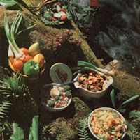

From Mother No. 75
Perk up your palate with these light (yet satisfying!) single-dish meals.
Right now, most garden plots are fairly bursting with mouthwatering vegetables . . . and a lot of that produce will find its way to the dinner table in large, colorful salads. But straight-fromthe-garden edibles aren't the only "raw materials" that can be used to make memorable salads. You can also create tasty cold dishes from cooked grains, pasta, beans, or marinated cooked vegetables.
The nourishing-and filling-"alternative" salads featured here should be prepared well in advance and refrigerated until serving time to allow their flavors to blend and mature. Each dish is based on nutritious, natural foods and-when served with homemade bread-makes an appealing, lightweight supper on those steamy summer days when no one feels much like cooking a hot meal- or like eating one.
Among chilled grain salads, tabouli -which you'll also see spelled a number of other ways-is probably the most "exotic." This spicy dish isn't a staple of most Westerners' diets, but it is a great Lebanese favorite . . . and the traditional formula can easily be varied to suit individual tastes.
1/2 cup of raw bulgur wheat
3 medium-sized tomatoes, chopped
1 cup of minced fresh parsley
1/3 cup of diced scallions
1/2 cup of lemon juice
1/2 cup of sesame or olive oil
2 tablespoons of finely chopped fresh (or 2 teaspoons of dried) mint
1 teaspoon of sea salt
Pinch of cayenne pepper
Combine all the ingredients and marinate them in the refrigerator for about 6 hours. Then adjust the seasonings to taste, and serve the tabouli on a thick bed of lettuce leaves or sprouts. (As an alternative, you could chop up the greens and toss them in with the salad . . . pile the whole mixture on a platter . . . garnish it with black olives and sprigs of parsley . . . and let four hungry people scoop it up-Middle Eastern style-with whole lettuce leaves.)
2 medium-sized zucchini squash, cubed and steamed
1 cup of thinly sliced onion
1/2 cup of chopped pimientos
1 large clove of garlic, pressed
1/3 cup of sesame or olive oil
3 tablespoons of vinegar
2 tablespoons of soy sauce
Marinate the foregoing ingredients and chill them for at least 4 hours. Meanwhile, you can prepare the rest of the salad, as follows.
2 tablespoons of butter
1 small onion, minced
1 cup of raw brown rice or millet
2 cups of water (3 cups if using millet)
3 tablespoons of soy sauce
1 tablespoon of catsup
1 teaspoon of curry powder
Sauté the onion in the butter before adding the grain, water, and seasonings. Next, cover the pan and let it simmer for about 45 minutes . . . after which you can stir in the marinated mixture and these garnishes:
1 large green pepper, chopped
1/2 cup of sliced green olives
1/2 cup of sliced black olives
2 tablespoons of chopped fresh parsley
Season the rice salad to taste and chill it thoroughly. This hearty cold dish will easily feed six people when it's arranged on a bed of greens and surrounded with sprouts and lemon wedges. You can even stuff the leftovers into pita bread pockets for the following day's lunch!
3 cucumbers
1/2 cup of plain yogurt
3 tablespoons of mayonnaise
1 tablespoon of fresh (or 1-1/2 teaspoons of dried) dillweed
1/2 teaspoon of celery seed
1/4 teaspoon of garlic powder
1/4 teaspoon of sea salt
Pinch of cayenne pepper
Sesame seeds
Slice the cucumbers very thin . . . combine them with the rest of the ingredients . . . and let the salad marinate in the refrigerator until it's well chilled. Sprinkle it with toasted sesame seeds just before serving. This tangy, refreshing dish will perk up a dinner for four.
1 bunch of fresh broccoli, cut in chunks (about 4 cups) and steamed
2 tablespoons of lemon juice
2 heaping tablespoons of minced scallions
1 cup of sliced mushrooms
1 clove of garlic, pressed
1 teaspoon of soy sauce
1/2 cup of dry white wine
3/4 cup of soy mayo, yogurt, or sour cream
Drizzle the lemon juice over the steamed broccoli and set it aside to cool. Then, in a saucepan over medium heat, simmer the rest of the vegetables in the wine and soy sauce for a few minutes. Add the broccoli before stirring in the mayonnaise ... refrigerate the dish for about 2 hours . . . and serve it to four to six broccoli lovers. (This salad will be especially attractive if you decorate it with cherry tomatoes and avocado cubes.)
2 cups of cooked green beans
2 cups of cooked pinto or kidney beans 11/2 cups of cooked chickpeas (garbanzo beans)
8 ounces of canned artichoke hearts, quartered (optional)
1 cup of fresh green peas, either raw or very lightly steamed
1 cup of diced carrots, lightly steamed
1/2 cup of sliced ripe olives
1/3 cup of chopped scallions
1/3 cup of diced green pepper
1/2 cup of chopped pimientos
1/4 cup of minced fresh parsley
1 tablespoon of chopped fresh (or 1-1/2 teaspoons of dried) chives
Combine all the ingredients in a large bowl, then add the following dressing:
1 cup of sesame or olive oil
1/2 cup of cider vinegar
2 tablespoons of honey
1 or 2 cloves of garlic, pressed
1-1/2 teaspoons of herb seasoning salt
1 teaspoon of basil
Pinch of cayenne pepper
Cover the bowl and let the mixture marinate-chilled-for at least 6 hours, stirring it occasionally. This recipe makes a lot of piquant, filling salad . . . so feel free to gather six or eight friends to help you eat it!
1-1/2 cups of cooked and drained macaroni or noodles
1 stalk of celery, sliced
1 small carrot, grated
2 tablespoons of minced parsley
1 tablespoon of chopped scallions
1/4 cup of diced green pepper (optional)
1/4 cup of alfalfa sprouts (optional)
Mix the pasta and vegetables together, and toss them with your favorite cream dressing . . . or make a distinctive sauce from the following ingredients:
1 cup of instant (or 2/3 cup of noninstant) milk powder
1/2 cup of plain yogurt
2 teaspoons of cider vinegar
1/2 teaspoon of soy sauce
1 teaspoon of basil
1/2 teaspoon of thyme
1/4 teaspoon of oregano
1/2 teaspoon of sea salt
Pinch of cayenne pepper
Chill the salad until you're ready to eat it (at least 2 hours), then serve it, on lettuce leaf beds, to four or five diners.
As you can see, a summer supper doesn't have to be heavy and hot . . . nor must it necessarily be a simple bowl of fresh vegetables and greens. Once you've tried one (or more) of these nutritious one-dish meals, we think you'll agree that "alternative" salads are the "hottest" coolers going in warm-weather cookery!
|
 |
|
|